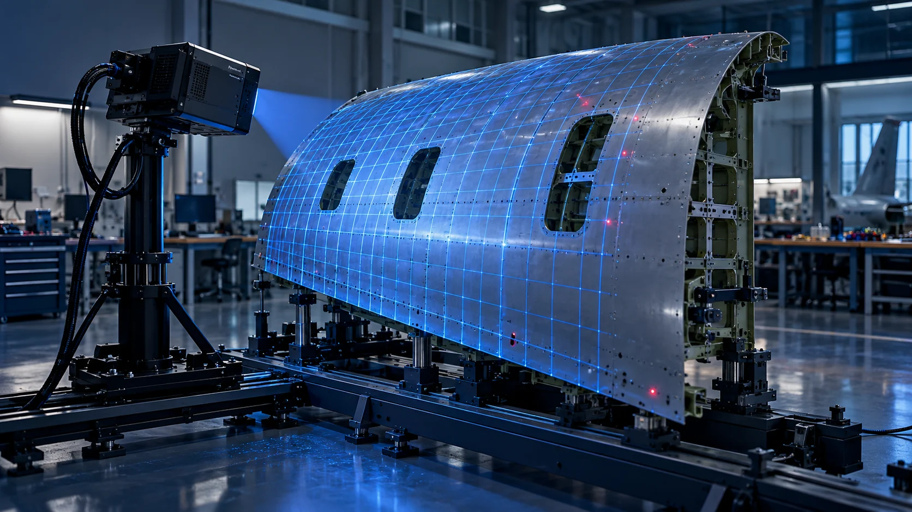
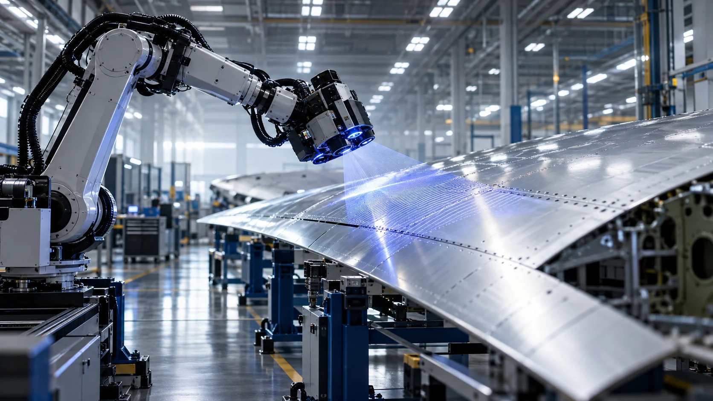
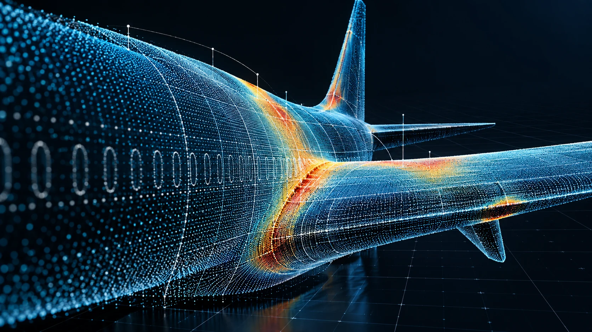
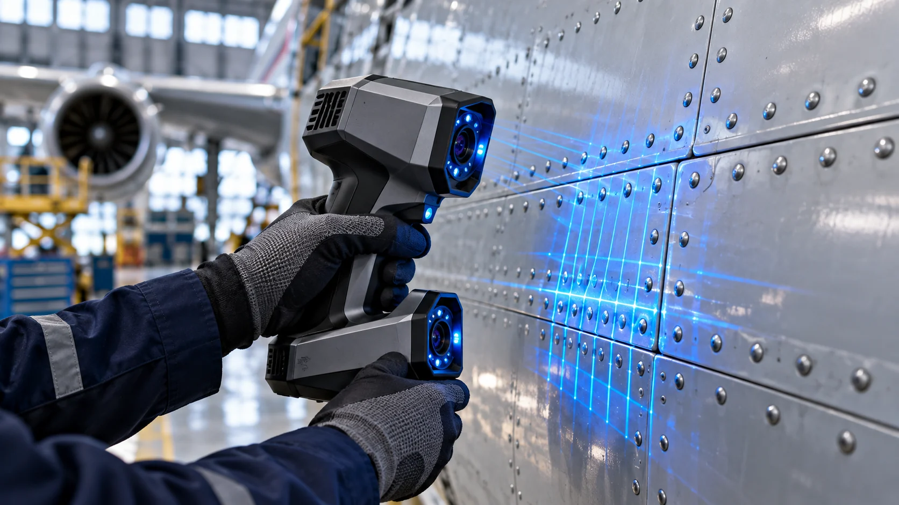

3D INSPECTION / 01
复杂曲面 · 结构光检测
高精度获取大尺寸复杂表面的三维形貌。
01/ 04
依托单位南京航空航天大学计算机科学与技术学院 / 软件学院
04研究主线
03产品系列
01完整能力链
CAPABILITY CHAIN从数据到工程判断
- 01三维采集
- 02点云处理
- 03专用检测
- 04结果评估
- 05软件与装备
02 / PRODUCT MATRIX
成果落地，
服务不同尺度的现场。
以应用对象和任务尺度区分三款产品，让合作方快速理解每项成果解决的工程问题。
03 / REPRESENTATIVE OUTPUTS
成果要被看见，
也要被理解。
首页只展示代表性工作，用“研究问题—方法突破—工程价值”的方式解释成果；完整论文、专利、项目与奖项进入成果库。
FEATURED / CASE 01几何计算 × 航空检测
从复杂曲面理解，
到可量化的工程判断。
围绕点云处理、形貌偏差分析和航空专用检测，建立由算法研究通向软件系统与现场装备的成果链条。